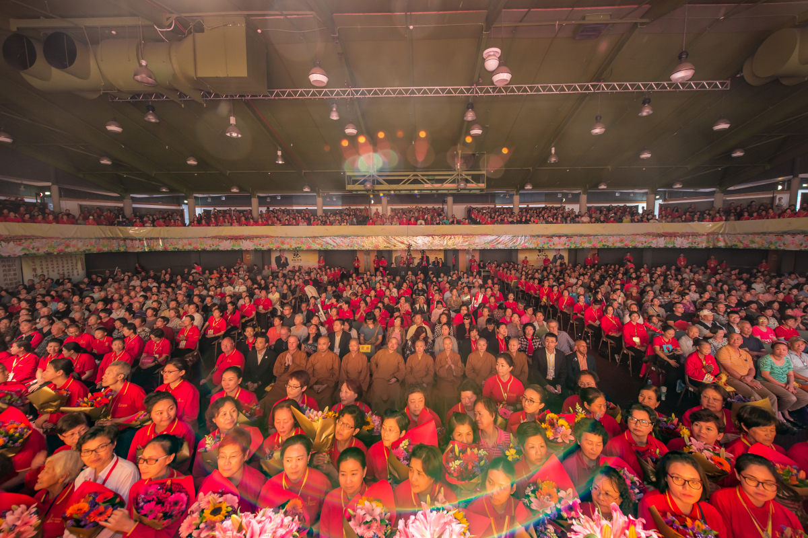

Events & Programs活动与项目
Join our regular Buddhism study sessions across Auckland -- all are welcome.参加我们在奥克兰各地举办的定期学佛班——欢迎所有人。
Upcoming Special Events近期特别活动
Auckland Guan Yin Citta 12th Anniversary Celebration奥克兰观音堂12周年庆典
Vesak Day – Sakyamuni Buddha's Birthday Celebration释迦牟尼佛圣诞庆典（卫塞节）
Joyful Liberation Day Celebration庆祝文空节

Buddhism Study Sessions
To cultivate good affinities and promote the wisdom of Buddhism, we regularly hold Buddhist study classes each month in Auckland's East, West, and North Shore regions. These sessions cover Buddha's birthday celebrations, seasonal cultural insights, plain-language Buddhist teachings, and Q&A discussions.为广结善缘、弘扬佛法智慧，我们每月定期在奥克兰东区、西区及北岸举办学佛班。课程涵盖释迦牟尼佛圣诞庆典、各季文化分享、通俗易懂的佛法讲解及问答交流。
Get in Touch联系我们Regional Study Sessions各区学佛班
The content is accessible and closely tied to everyday life, aiming to help more people approach, understand, and benefit from the Dharma.课程内容贴近生活，通俗易懂，旨在帮助更多人亲近、了解并受益于佛法。
North Shore Buddhism Study Session北岸学佛班
Held at Glenfield Mission Hall (Community Center building, next to library). Includes watching Dharma videos, chanting sutras, exploring Buddhist teachings, group sharing, and enjoying delicious vegetarian food together.在Glenfield Mission Hall（社区中心大楼，图书馆旁）举行。活动内容包括观看法会视频、诵经、佛法学习、小组分享及共享美味素食。
10:00 AM – 12:15 PM上午10:00 – 中午12:15Upcoming dates: Apr 4, Apr 18 · May 9, May 30 · Jun 13, Jun 27近期日期：4月4日、4月18日 · 5月9日、5月30日 · 6月13日、6月27日
Accessible by bus: 926, 95C, 941, 906, 917公共交通：926、95C、941、906、917路公车
Panmure Buddhism Study Session潘牟尔学佛班
Held at Panmure Community Hall. Whether you're new to Buddhism or deepening your practice, this is a great opportunity to connect with like-minded individuals in a peaceful and supportive environment.在潘牟尔社区中心举行。无论您是初学佛法还是深化修行，这都是在平和友善的环境中结交同修的好机会。
10:30 AM – 2:00 PM上午10:30 – 下午2:00Upcoming dates: Apr 11 · May 9 · Jun 20近期日期：4月11日 · 5月9日 · 6月20日
Accessible by bus: 70, 72C/XM, 711, 712, 352公共交通：70、72C/XM、711、712、352路公车
New Lynn Buddhism Study Session新林恩学佛班
Held at the Glass House, 45 Totara Ave, New Lynn. Includes watching Dharma videos, chanting sutras, exploring Buddhist teachings, group sharing, and enjoying delicious vegetarian food together.在新林恩Glass House（45 Totara Ave）举行。活动内容包括观看法会视频、诵经、佛法学习、小组分享及共享美味素食。
10:30 AM – 1:30 PM上午10:30 – 下午1:30Upcoming dates: Apr 18 · May 16 · Jun 13近期日期：4月18日 · 5月16日 · 6月13日
Bring a friend and come experience a morning of wisdom, compassion, and community. All are welcome!带上朋友，一起来体验充满智慧、慈悲与温情的美好时光。欢迎所有人！
Contact Us to Join联系我们参加